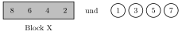

Aufgabe 1.7
In wie vielen Permutationen der Kugeln mit den Nummern 1 bis 8 stehen die Kugeln mit den Nummern 8, 6, 4, 2 in dieser Ordnung nebeneinander?
- Behandeln Sie die vier Kugeln 8, 6, 4, 2 als eine Einheit
- Wie viele Objekte müssen Sie dann insgesamt anordnen?
- Die interne Reihenfolge der vier Kugeln ist fest vorgegeben
- Denken Sie an einen «Block» oder «Superball»
Die Schlüsselidee: Zusammenkleben
Die Bedingung ist, dass die Kugeln 8, 6, 4, 2 in genau dieser Reihenfolge nebeneinander stehen müssen. Wir können diese vier Kugeln gedanklich
zu einem «Superball» oder Block zusammenkleben.

Systematische Lösung:
Nach dem Zusammenkleben haben wir:
- 1 Block (bestehend aus den Kugeln 8, 6, 4, 2)
- 4 einzelne Kugeln (1, 3, 5, 7)
- Insgesamt also 5 Objekte zu permutieren
Die Anzahl der Permutationen von 5 Objekten ist: $$5! = 5 \cdot 4 \cdot 3 \cdot 2 \cdot 1 = 120$$
Beispiele für gültige Anordnungen:
- $(3, 1, \underbrace{8, 6, 4, 2}_{\text{Block}}, 5, 7)$
- $(1, \underbrace{8, 6, 4, 2}_{\text{Block}}, 3, 7, 5)$
- $(\underbrace{8, 6, 4, 2}_{\text{Block}}, 1, 3, 5, 7)$
Warum funktioniert diese Methode?
Die vier Kugeln 8, 6, 4, 2 müssen:
- Nebeneinander stehen (keine anderen Kugeln dazwischen)
- In der vorgegebenen Reihenfolge stehen (8 vor 6 vor 4 vor 2)
Durch das «Zusammenkleben» stellen wir beide Bedingungen sicher:
- Der Block garantiert, dass sie zusammenbleiben
- Die interne Ordnung im Block ist fest (nur eine Möglichkeit)
Alternative Denkweise:
Man kann auch so argumentieren: Der Block aus 4 Kugeln kann an 5 verschiedenen «Startpositionen» beginnen (Position 1, 2, 3, 4 oder 5). Für jede Startposition gibt es $4!$ Möglichkeiten, die restlichen 4 Kugeln anzuordnen. Das ergibt $5 \cdot 4! = 5 \cdot 24 = 120$.